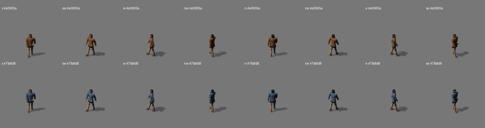
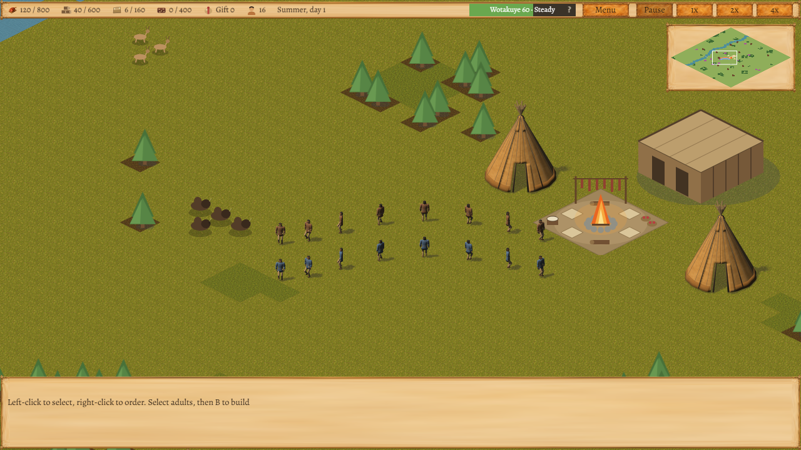
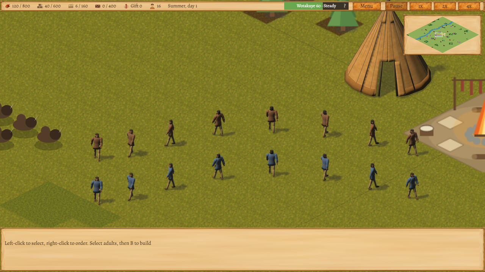

AB12 · Human rig and walking
Approval authority: user. Candidate only. Eight directions, Cottonwood orange and Kingfisher blue. The first loop is the normal game display size at zoom 1; the second doubles it. The remaining men’s actions belong to AB13.
 Normal display size · 12 frames per second
Normal display size · 12 frames per second
Zoom 2All base and cloth frames on grey and dark grounds · Delivery, source hashes and retained AB0 prompts · Approved AB0 concept
In-game previews
Candidate atlas loaded in a private game copy. Walking is driven through the normal people renderer. Other ages, women and remaining animations are outside this batch.


Browser checks · Reproduction and limitations